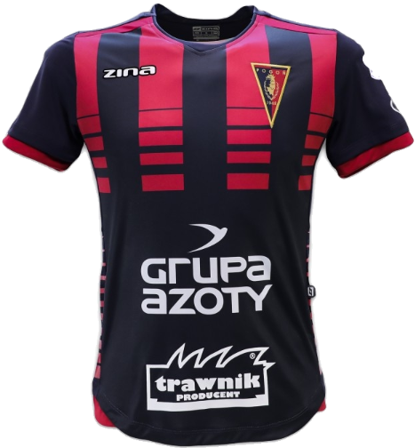
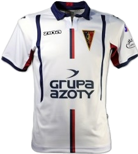
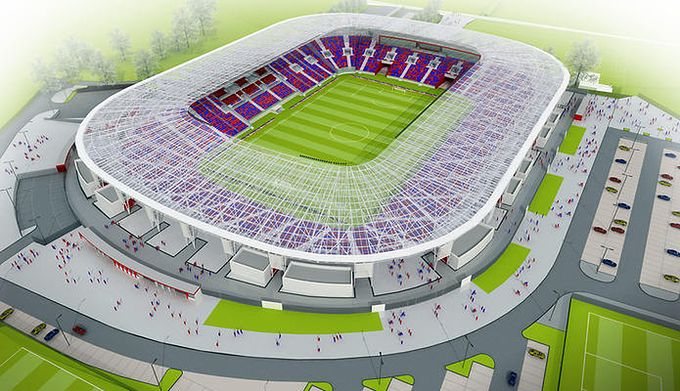

Najnowsze Informacje

POGOŃ SZCZECIN


Informacje o klubie:
- Morski Klub Sportowy Pogoń Szczecin
- Data założenia: 21 kwietnia 1948
- Adres: Karłowicza 28, 71-102 Szczecin
- Stadion: im. Floriana Krygiera (w budowie)
- Prezes: Jarosław Mroczek (od 1 lutego 2011)
- Trener: Kosta Runjaić GER (od 6 listopada 2017)



Napastnicy
Pomocnicy
Obrońcy
Bramkarze
Fanatics Zone
ZGODY
Ujpest Budapeszt
Kotwica Kołobrzeg (układ)
KOSY
Arka Gdynia
Lechia Gdańsk
Zagłębie Sosnowiec
Cracovia
Lech Poznań